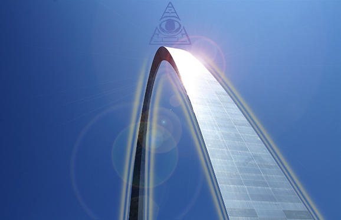

The St Louis arch will once again emit it's signal from the earth's core destroying
All of the America's populations

The shadow government has long been aware of the power of the arch
and that it is the last standing functional piece of Egyptian tech given to us by the Anunnaki
which the government relocated to AMERICA!